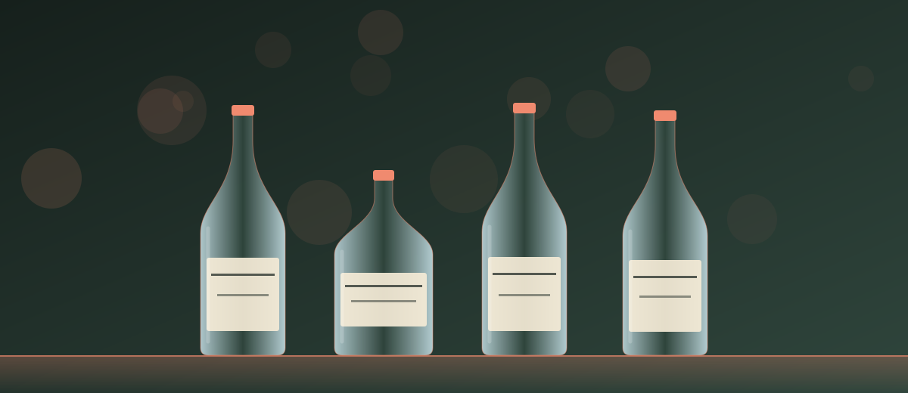

01
Цена изменится?
Главная причина недовольства клиентов — цена меняется при встрече. 1buyup, TotalStok, Kupimalko и VykupAlko прямо обещают, что согласованная по фото сумма не изменится. Попросите подтвердить это в переписке до приезда специалиста.
Скупка алкоголя: выезд в течение 2 часов.
клон 700ml
Возможно, один оператор: Кластер 700ml (сайты: 700ml.ru, oldcognac.ru). Это признаки по шаблонам и контактам, а не доказательство.

| Сайт | alkolombard.ru |
|---|---|
| Телефон | +7 (999) 988-67-77 |
| График работы | 8:00–1:00 ежедневно |
| Адрес | не указан |
| Мессенджеры | WhatsApp, Telegram, Max |
| Скорость оценки | Выезд в течение 2 часов после согласования цены. |
| Цены | Не публикует. |
| Диапазон цен | 67–72% от рыночной цены бутылки — Компания цены не публикует; указан типичный уровень выкупа по открытым таблицам цен скупок. Цены меняются — уточняйте перед сделкой. |
Данные собраны 30 сентября 2026 по публичным сайтам компании. Самозаявления не проверялись. Цены и условия уточняйте у компании.